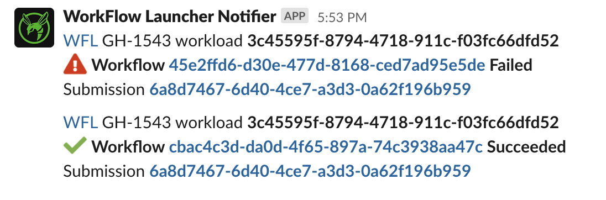

Staged Workloads⚓︎
A staged workload takes data from a source, pushes it into a workflow executor for analysis, and then delivers the results of the analysis to an output location (also known as a sink).
Depending on the workload's source, processing may be continuous -- inputs streaming in until stopped -- or discrete -- all inputs known at workload creation.
Staged Workload Components⚓︎
Source⚓︎
The workload Source models the first stage of a processing pipeline.
A Source reads workflow inputs from a specified location
or service in the cloud.
Executor⚓︎
The workload Executor models an intermediate stage of a processing pipeline.
An Executor uses a supported service in the cloud to execute workflows.
Sink⚓︎
The workload Sink models the terminal stage of a processing pipeline.
A Sink writes workflow outputs to a desired location in the cloud.
Example Staged Workload⚓︎
The specific values below are derived from the "COVID-19 Surveillance in Terra" project.
Workloads for other projects may leverage different implementations for source, executor or sink.
For guidance on how to interact with staged workloads via WFL API, see API Usage.
{
"watchers": [
["slack", "C000XXX0XXX"],
["slack", "C000YYY0YYY", "#optional-channel-name-for-context"]
],
"labels": [
"hornet:test"
],
"project": "wfl-dev/CDC_Viral_Sequencing",
"source": {
"name": "Terra DataRepo",
"dataset": "4bb51d98-b4aa-4c72-b76a-1a96a2ee3057",
"table": "flowcells",
"snapshotReaders": [
"workflow-launcher-dev@firecloud.org"
]
},
"executor": {
"name": "Terra",
"workspace": "wfl-dev/CDC_Viral_Sequencing",
"methodConfiguration": "wfl-dev/sarscov2_illumina_full",
"fromSource": "importSnapshot"
},
"sink": {
"name": "Terra Workspace",
"workspace": "wfl-dev/CDC_Viral_Sequencing",
"entityType": "flowcell",
"identifier": "run_id",
"fromOutputs": {
"submission_xml" : "submission_xml",
"assembled_ids" : "assembled_ids",
"num_failed_assembly" : "num_failed_assembly",
...
}
}
}
Staged Workload Anatomy (High Level)⚓︎
| Field | Type | Description |
|---|---|---|
| watchers | List | An optional list of Slack channels to notify |
| labels | List | A list of user-defined labels. They must be a string of the form "name":"value”, where name must start with a letter followed by any combination of digits, letters, spaces, underscores and hyphens and value is any non-blank string |
| project | String | A non-null string to allow querying workloads by project |
| source | Object | The source of new workflow inputs |
| executor | Object | The mechanism executing the analysis |
| sink | Object | The destination for workflow outputs |
Slack Notifications for Watchers⚓︎
The optional watchers field in a workload request
registers Slack channels as watchers of the workload.
"watchers": [
["slack", "C000XXX0XXX"],
["slack", "C000YYY0YYY", "#optional-channel-name-for-context"]
]
When specified, WFL expects a list of Slack channel IDs. You can also add the channel name as the watcher's third element, but because channel names can change this is for decoration and debugging assistance only and not accessed programmatically.
Slack channel IDs start with a C and can be found at the bottom
of your channel's "Get channel details" dropdown:

What notifications are emitted?⚓︎
User-facing exceptions - Ex. Issues accessing TDR dataset, snapshot, etc.
Notable state changes - TDR snapshot creation job failed - Terra submission created - Terra workflow has completed

In the future, WFL may allow for these two notification streams to be configured separately. High-volume use cases (ex. 100s of workflows/day) may find some state change notifications too noisy.
Prerequisites⚓︎
-
Channel must live in the
broadinstitute.slack.comSlack organization -
The WFL notifier Slack App has been added to your channel --
/invite @WorkFlow Launcher Notifier
Stopping Notifications⚓︎
If notifications are too noisy, you can /remove @WorkFlow Launcher Notifier
from your channel as a quick fix.
At this time, there isn't a way to update the watchers list
for an existing workload.
The long-term approach is to stop your workload,
recreate it with an updated watchers list,
and start the new workload.